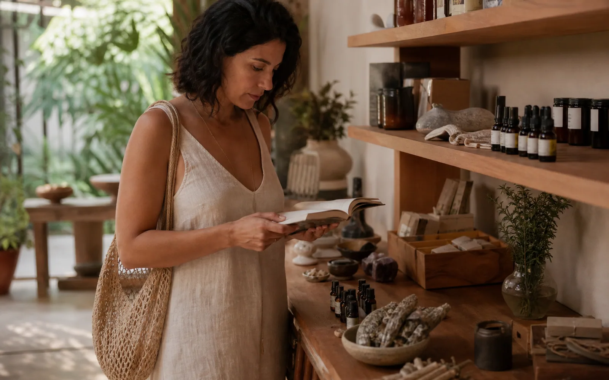

Livros
Leituras que acompanham cursos, grupos de estudo, cultura e processos de autoconhecimento.

Escolhas com contexto
conhecimento antes da compra
Produtos aparecem como continuidade de uma prática, de um estudo ou de uma orientação — nunca como atalhos para o cuidado.
Conhecer a curadoria01
Levar algo consigo
A curadoria reúne itens relacionados à vida do Instituto. Um livro pode aprofundar um curso; um óleo essencial pode acompanhar uma orientação; um objeto pode recordar uma prática.
Uma curadoria viva
O acervo e a disponibilidade mudam. As categorias abaixo mostram a relação entre os produtos e as experiências do Ecossistema.
Leituras que acompanham cursos, grupos de estudo, cultura e processos de autoconhecimento.
Itens ligados à aromaterapia, apresentados com contexto e orientação de uso responsável.
Peças escolhidas por sua relação com práticas, simbolismos e interesses pessoais.
Incensos, produtos naturais e outros itens para apoiar rituais simples de presença.
Antes de escolher
Produtos não substituem atendimento, diagnóstico ou tratamento. Quando houver dúvida, converse com a equipe ou procure orientação profissional adequada.
Pedir orientação ↗Conexões
Explore cursos, cultura e atendimentos que dão significado às escolhas reunidas aqui.